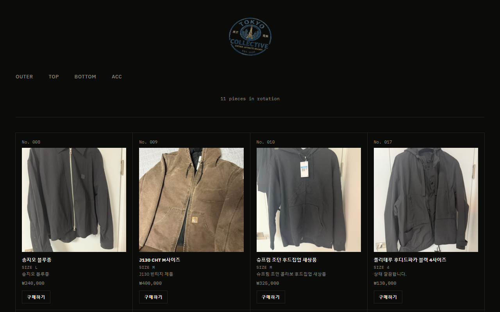
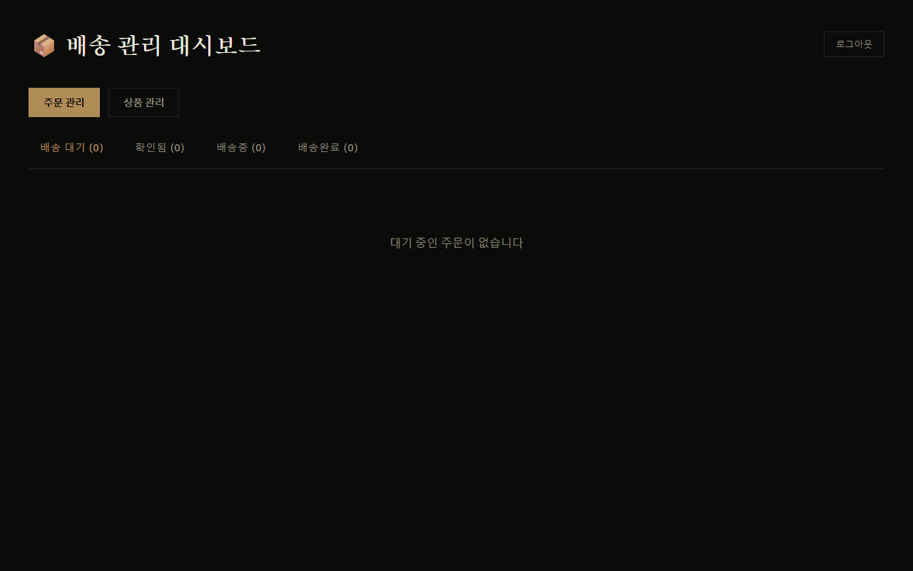
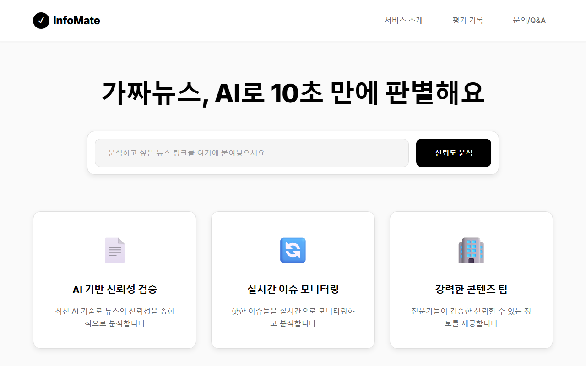
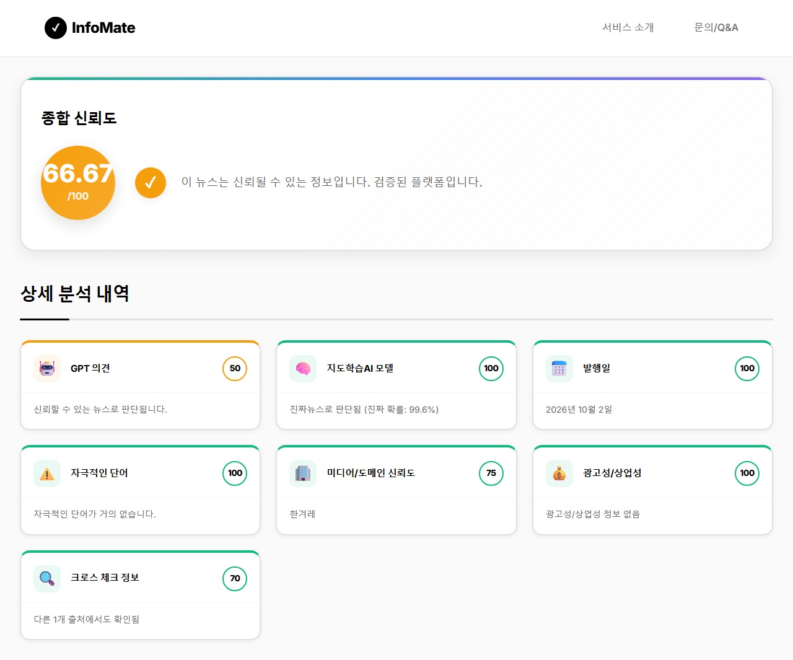
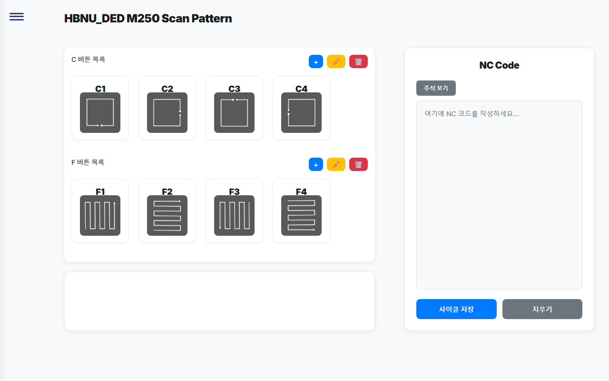
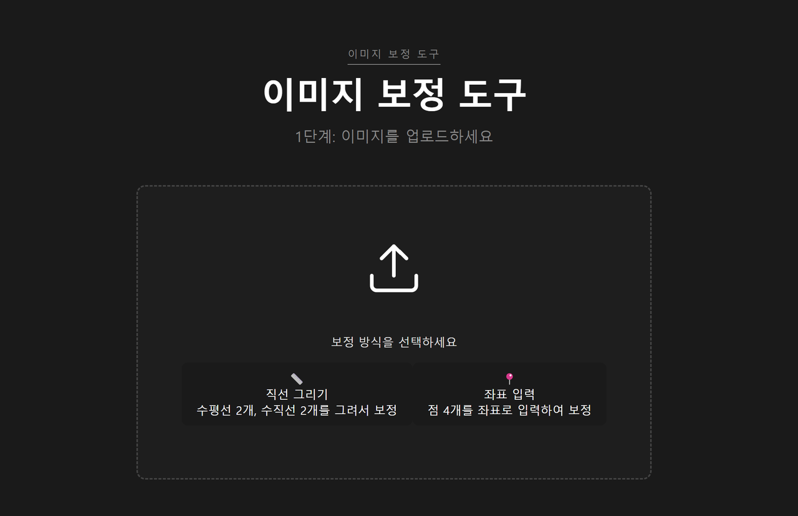
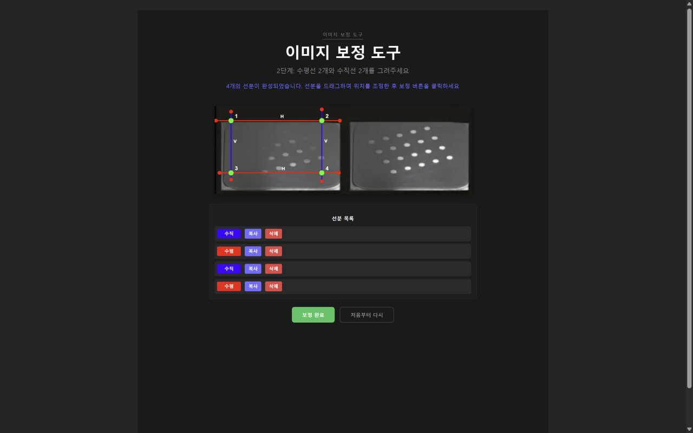
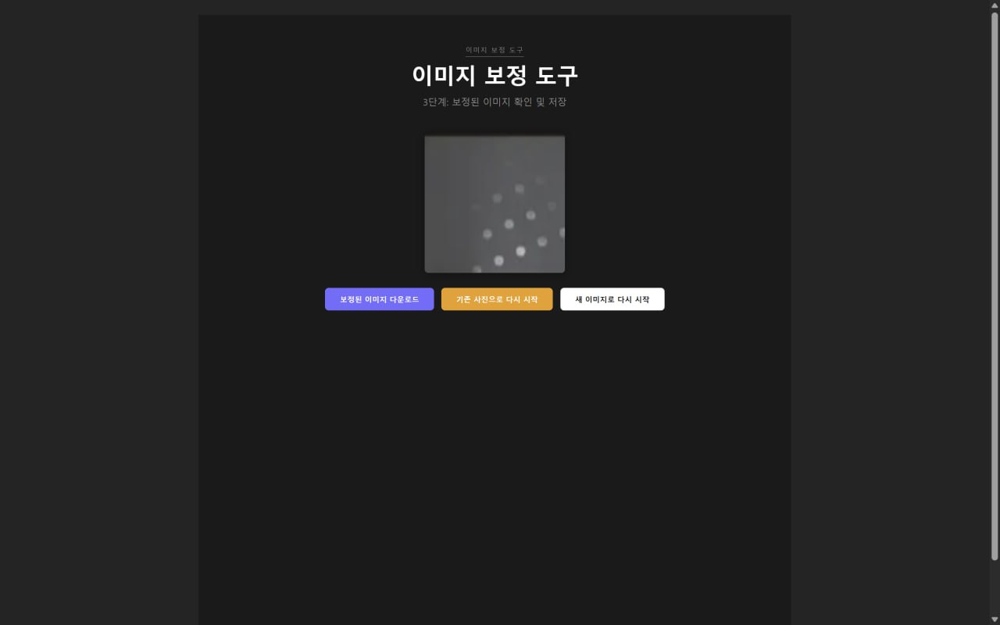

쓰이는 것을 만든다
기능 목록보다 "누가, 언제 쓰는가"에서 시작합니다. 판매용 쇼핑몰과 장비용 도구는 실제 사용자가 있었기 때문에 끝까지 완성할 수 있었습니다.
근거 · Tokyo Collective, DED-SCANPATH
한밭대학교 컴퓨터공학과 · 3학년 · 임성주
과제로 끝나는 코드보다, 오늘도 누군가 열어보는 서비스를 만들고 싶습니다. 지금 제 옷을 팔고 있는 쇼핑몰, 학교 3D 프린터 작업에 쓰인 도구, 4명 팀을 이끌어 완성한 AI 서비스가 그 기록입니다.
01 · About
기능 목록보다 "누가, 언제 쓰는가"에서 시작합니다. 판매용 쇼핑몰과 장비용 도구는 실제 사용자가 있었기 때문에 끝까지 완성할 수 있었습니다.
근거 · Tokyo Collective, DED-SCANPATH
잘 될 때보다 안 될 때 어떻게 동작할지를 먼저 정합니다. 동기화가 실패하면 반영하지 않고, 분석이 늦어지면 타임아웃과 재시도로 사용자를 안내합니다.
근거 · 동기화 이중화, 타임아웃·캐싱·재시도
팀장으로 역할을 나누고 마일스톤을 세웠고, 막힌 팀원의 파트는 같이 붙어서 해결했습니다. 동아리에서는 2년간 자금과 인원을 맡았습니다.
근거 · InfoMate 팀장, 상상네이버스 임원
한밭대학교 컴퓨터공학과 3학년 재학
한밭대학교 스마트 3D프린팅 연구소 S/W팀 랩실원 (2025.06 – 2026.01) — 3D 프린팅 작업 중 겪은 불편을 DED-SCANPATH, Image_Editor로 직접 해결
국가우수장학금(이공계) 수혜
봉사동아리 상상네이버스 임원 2년 — 2학년 총무부장(자금 관리, 지출 내역 보고서 작성), 3학년 인사부장(인원 관리, 행사별 참여 인원 취합·정리)
02 · Skills
기술 이름만 나열하지 않고, 각 기술을 실제로 쓴 프로젝트를 표시했습니다. ● 직접 구현 · ○ 팀 프로젝트에서 사용
| 기술 | Tokyo Collective |
InfoMate | DED- SCANPATH |
Image Editor |
|---|---|---|---|---|
| Frontend | ||||
| Vue 3 | ● | ● | ● | ● |
| Vite | ● | ● | ● | |
| Vue Router · Pinia | ● | |||
| Canvas API | ● | |||
| Backend · Data | ||||
| Node.js · Express | ● | |||
| Django | ○ | |||
| SQLite · Turso | ● | |||
| Supabase (PostgreSQL) | ● | |||
| 웹 스크래핑 | ● | ○ | ||
| Infra · 협업 | ||||
| Vercel 서버리스 | ● | |||
| GitHub Actions · Cron | ● | |||
| Docker Compose · Nginx | ○ | |||
| Vitest | ● | |||
| Notion 일정 관리 | ● | |||
03 · Projects
각 프로젝트는 개요 · 구조 · 문제 해결 · 배운 점 순서로 볼 수 있습니다.
제가 중고로 판매하는 빈티지 의류를 소개하는 쇼핑몰입니다. 중고 거래 플랫폼 FruitsFamily의 판매자 페이지와 15분마다 자동으로 동기화하고, 구매는 원본 판매 링크로 연결합니다.


기획, 설계, 프론트엔드, 백엔드, 배포, 운영을 혼자 담당했습니다. AI 코딩 도구(Claude Code)로 개발 속도를 높이고, 핵심 로직은 직접 검증했습니다.
동기화가 한 번 빠지면 이미 팔린 옷이 사이트에 계속 남습니다. 반대로 스크래핑이 중간에 깨지면, 일부만 읽힌 목록 때문에 멀쩡한 상품이 사이트에서 사라질 수 있었습니다.
스케줄러 이중화 cron-job.org를 주 경로로, GitHub Actions를 백업으로 두어 한쪽이 빠져도 동기화가 이어지게 했습니다.
실패하면 반영하지 않기 스크래핑이 실패하면 변경 사항을 DB에 쓰지 않고 이전 상태를 유지하도록 했습니다.
네트워크와 DB 없이 도는 테스트(Vitest)로 동기화의 핵심 로직을 확인합니다.
뉴스 URL을 넣으면 AI가 출처, 편향성, 광고성을 분석해 0~100점의 신뢰도를 알려주는 가짜뉴스 판별 서비스입니다. 팀장으로 4명 팀을 이끌고 프론트엔드를 맡았습니다.


services/api.js로 분리하고 API 주소를 환경 변수로 관리점선 표시는 팀 프로젝트에서 함께 쓴 기술입니다.
분석 한 번에 크롤링과 AI 추론을 차례로 거쳐 응답이 늦었습니다. 기다리는 동안 진행 상황을 알 수 없었고, 지연되면 응답이 오지 않기도 했습니다. 같은 기사도 매번 처음부터 분석했습니다.
로딩 스피너와 예상 소요 시간을 보여주고, 실패하면 원인별 에러 메시지와 재시도 버튼을 띄웠습니다.
팀원과 함께 크롤링·추론에 타임아웃을 걸고, 같은 URL은 결과를 캐싱해 바로 돌려주게 했습니다. 응답 시간을 모니터링하며 추론 속도도 개선했습니다.
응답 시간은 백엔드만의 문제가 아니라, 기다리는 동안 무엇을 보여주는지까지 포함한 문제라는 것을 배웠습니다.
3D 프린팅 시 매 적층마다 NC 코드를 직접 찾아서 넣어줘야 하는 불편함을 해결하기 위해 만들었습니다. 학교 DED M250 3D 프린터용 스캔 패턴을 구성하고 NC 코드와 3D 프린팅 코드를 생성·관리하는 도구입니다. 실제 장비 작업에 사용되었습니다.

3D 프린팅 시 매 적층마다 출력되는 이미지의 각도가 달라 균일한 데이터를 모으기 어려웠던 문제를 해결하기 위해 만들었습니다. 사용자가 그은 수평·수직 선분을 기준으로 이미지의 원근을 보정하는 웹 앱입니다. 여러 장을 순서대로 보정하고 한 번에 내려받을 수 있습니다.



직접 해보기 네 꼭짓점을 드래그해 보세요. 네 점의 대응 관계로 3×3 Homography 행렬을 풀어 평면을 변환합니다. Image_Editor의 원근 보정이 이 원리로 동작합니다.
04 · Journey
혼자 만드는 도구에서, 팀을 이끄는 서비스, 그리고 혼자 운영하는 풀스택 서비스까지.
연구실 S/W팀 랩실원으로 활동하며, 3D 프린팅 장비 작업 중 겪은 불편을 직접 도구로 만들어 해결했습니다. 그 결과물이 DED-SCANPATH와 Image_Editor입니다.
연구실매 적층마다 NC 코드를 직접 찾아서 넣어줘야 하는 불편함을 해결하기 위해 만든 도구. 화면뿐 아니라 DB(Supabase) 연동과 연결이 끊겼을 때의 대응까지 설계했습니다.
프론트엔드 + DB팀장으로 4명의 일정과 역할을 설계하고, 프론트와 백엔드의 경계에서 생기는 문제를 함께 풀었습니다.
팀 리딩 + API 연동매 적층마다 출력되는 이미지의 각도가 달라 균일한 데이터를 모으기 어려웠던 문제를 해결하기 위해 만든 도구. Homography 행렬을 직접 계산해 원근 보정 기능으로 옮겼습니다.
알고리즘 + Canvas기획부터 서버, DB, 배포, 운영까지 혼자 맡은 풀스택 서비스. 지금도 실제 판매에 쓰고 있습니다.
풀스택 + 운영